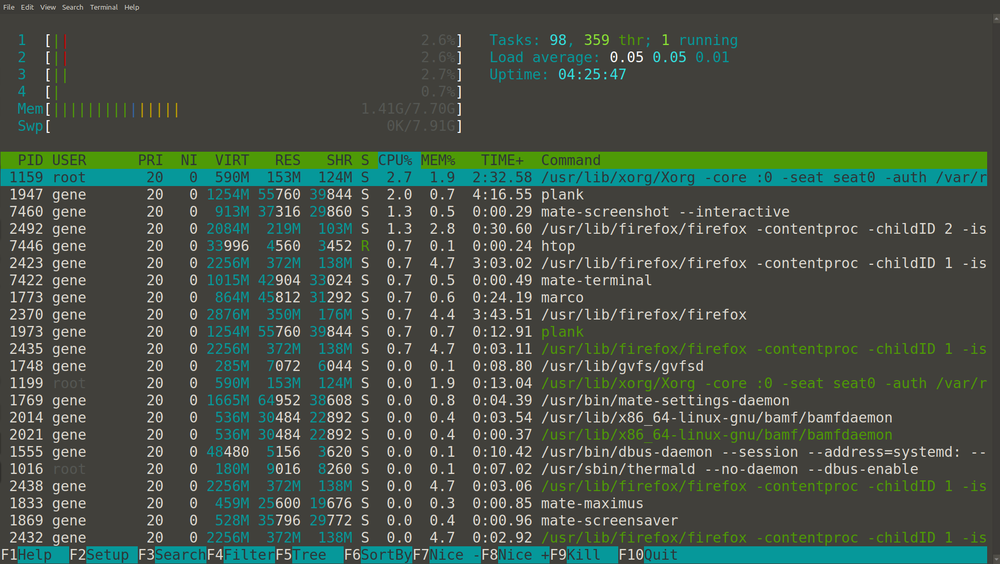

While the other sections of this introduction have covered the most basic UNIX features that every beginner should focus on, this section is all about getting a taste of what else can be done on the command line. Command line apps can be used for a variety of office productivity tasks (document production, spreadsheets, double-entry bookkeeping, journaling, presentation deck building, etc), media consumption, and system management. While command line apps might not have all the visual flourishes of their graphical counterparts, many are incredibly powerful, flexible, and portable.
Their portability allows them to run on a wide variety of different software and hardware platforms, making it easier to run the same apps everywhere. Their minimalist, text-centric aesthetic can easily fit in wide variety of environments, and their appearance is easily customized using existing terminal tools. Finally, many of them can be scripted in ways that are almost impossible to replicate in GUI apps. Below is a brief overview of some of the capabilities of five of these programs. It’s impossible to list, let alone explain all of their features in such a short tutorial, but this will hopefully give a taste of what's possible and where to get started.
A quick note on content: All of the music used in this demo was downloaded from The Free Music Archive because I didn't have any actual music on the machine I used for this. I just grabbed a mix of their top hits / top alphabetical hits / a few random songs from their Christmas section because all of those things were easily linked on their home page. I'm in no way endorsing any of this music on aesthetic, grammatical, ideological, or religious grounds. It was free, legal and easy to download.
CMUS is a command line music player. It can catalog audio across a complex file hierarchy and play them back from inside a terminal. It's particularly useful on a system with limited resources because of how lightweight it is, but it's also popular among those who enjoy working in the terminal, or who simply appreciate its simplicity, reliability and impressive feature set.
Debian/Ubuntu Installation:sudo apt-get install cmusFirst Launch:
CMUS launches to a rather spartan interface.
File Browser
The first step is to press "5" and then navigate to the location of the music to be played. Each track can be added by highlighting it and pressing "a". According to its Git Hub page: "cmus does not move, duplicate or change your files. It just remembers where they are and caches the meta-data [...]"
CMUS contains several different views, but the easiest to start with is the library view. Once the files have been added, the library view is reachable by pressing "2".
The Library
Navigating to a song (using arrow keys) and pressing "Enter" will play the track. CMUS has keyboard shortcuts for moving forwards and backwards, pausing, volume control, and jumping to the next track.
Volume
Quiting is just a matter of pressing "q" and the confirming you want to quite with "y".
Quiting
More information can be found here: Main Page Feature List CMUS Wiki Other Resources
Htop is an alternative to the "top"command. It's used to monitor a system, much as one would with top, but provides more information, is more aesthetically pleasing, and has several advanced features. It makes it very easy to sort processes according to several different parameters, search for specific process, and send signals to them. It's particularly useful when trying to track down performance issues, or for finding and killing runaway processes.
Debian/Ubuntu Installation:sudo apt-get install htop
More information can be found on the HTOP Website.
Pandoc is a file conversion utility that lets you transform documents from one file type or markup to another. In the words of its creator: "If you need to convert files from one markup format into another, pandoc is your swiss-army knife."
There are many different scenarios in which pandoc can be useful; we'll focus on something simple here today, converting a LibreOffice ODT file into simple HTML.
Here, we have a simple document with just enough formating to see if pandoc can output clean HTML.
In this example, the syntax for the pandoc command is as follows:
pandoc TestDoc.odt -s -o TestDoc.html
"pandoc" calls the command, "TestDoc.odt" tells it which file to convert, the "-s" tells it to output to a standalone file (pandoc can also just output its result to standard out, allowing you to pipe it to another command), and the "-o TestDoc.html" tells it where to create the new file and what to call it.
In this example, pandoc deduces the format of both the original document and the desired format of the output document by looking at the file endings, but there are optional parameters that would allow you to specify these things if you ever wanted to use an input or output file that wasn't labeled in that way.
Here, you can see that a new file has been created. The HTML code can be seen next to the cat command, and the resulting web page is rendered in Firefox on the left.
sudo apt-get install pandocMore information can be found on the Pandoc Website.
It's probably worth mentioning that this part of the website was written in markdown and later converted to HTML using Pandoc, with a command very similar to the one shown here.
PowerTOP allows you to tune power settings on your computer.
If it's available in your repositories, PowerTOP is installed on Debian/Ubuntu systems with the command:sudo apt-get install powertopPowerTOP has to be run with sudo:
sudo powertopIt gives you detailed stats about your device's power consumption, and lets you tune several settings to extend your battery life or reduce power consumption if you are plugged-in.
It's important to note that while using PowerTOP is very easy, the changes it makes are fairly complex. It should only be used by more experienced users, or people experimenting on systems that aren't mission critical. There are reasons why not all of these settings are enabled by default and while PowerTOP can drastically improve battery life on some devices with only minor performance differences, it could cause serious issues in other scenarios.
More information can be found on the PowerTOP_Tunables2 Website, in the Arch Linux Wiki, or in this Intel Primer.
Taskwarrior is a very clever and polished command line task manager. It's simple, powerful, and can be lightning quick, especially if favorite commands (with defaulted settings) are aliased (as explained in the other tutorial on this site).
The most basic Taskwarrior is triggered by the command "task". Without any arguments, it will default to listing current tasks. "task add" will create a new task using whatever follows the "add" as a task name.
Listing and adding tasks
A priority setting can be added to a new task by following the "task add" with a priority argument. Below, the "H" is denotes that this is a high priority task. When looking at the new task list, it's clear that the new task is high priority.
Adding tasks with due dates
Lets add a few more tasks and this time, we'll specify due dates and wait dates.
Adding more tasks
After adding another task with a lower priority, it's time to see what our task list looks like.
Taskwarrior sorts tasks by priority
We can clearly see that Taskwarrior is listing the tasks with a priority first, with the highest priority at the top of the list.
Taskwarrior can also understand relative due dates, such as "due:now".
Using relative dates
Taskwarrior's urgency algorithm apparently thinks a missed deadline is even more urgent than a high priority task.
Let's pad the list a little more.
Adding more tasks
Of course, there wouldn't be much of a point in making a task list if things couldn't get done and crossed off the list. In Taskwarrior, the command to mark a task as done is "task [TheTaskNumber] done".
Marking tasks as done
"Plan Taskwarrior Tutorial" is now gone from the task list. If we needed to go back and look at it, or output a list of everything we got done on a particular day "task completed" would give us a list of completed tasks.
Completed List
Taskwarrior also has a basic calendar view. The screenshot below shows a task list above the calendar view to make it easier to see how they match up.
Calendar View
If we needed to change an existing task, we could type "task [TheTaskNumber] modify", followed by the arguments being modified, to make the change. In the example below, the absence of a priority setting after "priority:" tells Taskwarrior to replace the existing priority setting with a null value.
Modifying Tasks
Changing a due date is easy:
Changing Due Dates
Now that we have more than one task due tomorrow, we can use that argument ("task due:tomorrow") to search for all tasks due tomorrow.
Listing tasks by due dates
There is a lot more to Taskwarrior than the basic features covered here: it supports common task management features such as contexts, projects, and additional notes; it has advanced report generation capabilities; it's scriptable; it can be synchronized across devices using the Tasksever, or import/export data in JSON; there is also a rich set of additional tools that have been developed by the community.
More information can be found on the Taskwarrior Website, or in the Project Documentation. Links to additional tools can be found here.